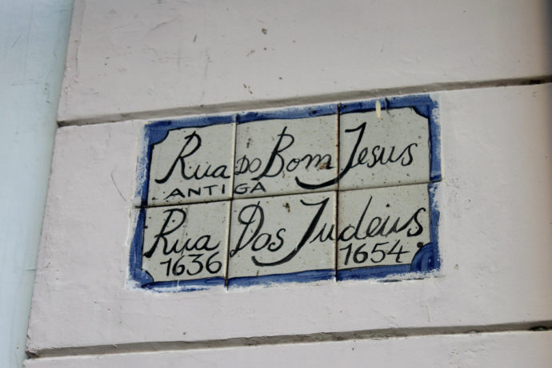
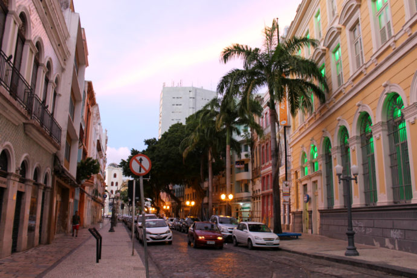

Recife Antigo

O que fazer no Recife Antigo
O nome oficial é Bairro do Recife, mas todo mundo chama mesmo é de Recife Antigo ou, quando começa a intimidade, só “Antigo” mesmo. Nesse barro pode-se caminhar sem rumo pelas ruas de paralelepípedos, lembrando sempre de olhar pra cima pra paquerar os prédios históricos, um dia no Recife Antigo inclui um punhado de atrações massa, sem falar nos bons bares e restaurantes. E apesar de ser um dos principais cartões postais recifenses, o bairro não é só pra turista ver: ele também é o maior polo tecnológico e um dos principais centros de lazer e cultura da cidade.
Ao chegar no Marco Zero e caminhar um pouco, você ira se deparar com o centro de artesanato e após caminhar mais um pouco o Museu Cais do Sertão, onde retrata a vida no sertão e a vida de Luiz Gonzaga.

Após sair do museu e caminhar um pouco, pode-se chegar na querida rua do Bom Jesus. Além dos prédios coloridos, ela abriga a primeira sinagoga nas Américas, Kahal Zur Israel, que é um dos marcos mais importantes da presença judaica no Brasil colônia e pode ser visitada.
 